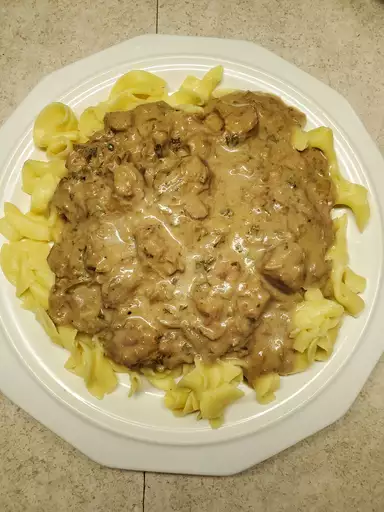

Stroganoff Recipe

Ingredients
- 1 ½ pounds cubed beef stew meat
- salt and ground black pepper to taste
- 1 onion, chopped
- 1 (10.75 ounce) can condensed cream of mushroom soup
- ¼ cup water
- 1 tablespoon dried chives
- 2 cloves garlic, minced
- 1 tablespoon Worcestershire sauce
- 1 cube beef bouillon
- ½ cup red wine
- 1 tablespoon cornstarch
- 1 tablespoon all-purpose flou
- 1 (8 ounce) container sour cream
- 1 (8 ounce) package sliced fresh mushrooms
- 4 ounces cream cheese
- ½ cup chopped fresh parsley
Steps:
- Step 1
Spread beef stew meat into bottom of slow cooker crock;
season with salt and pepper. Layer onion over the beef. Pour mushroom soup and
water over the beef; add chives, garlic, Worcestershire sauce, and beef bouillon.
- Step 2
Whisk red wine, cornstarch, and flour together in a
small bowl; pour over the mixture in the slow cooker.
- Step 3
Cook on Low for 6 to 7 hours. Stir sour cream, mushrooms,
cream cheese, and parsley into the beef mixture; continue cooking for 1 hour more.
- Step 3
Serve over pasta.
Main page